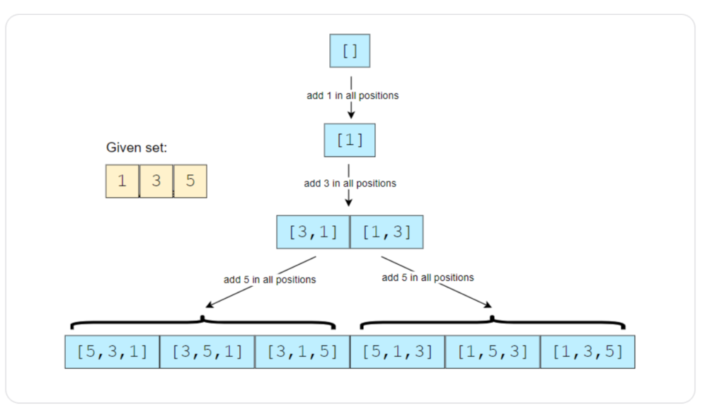
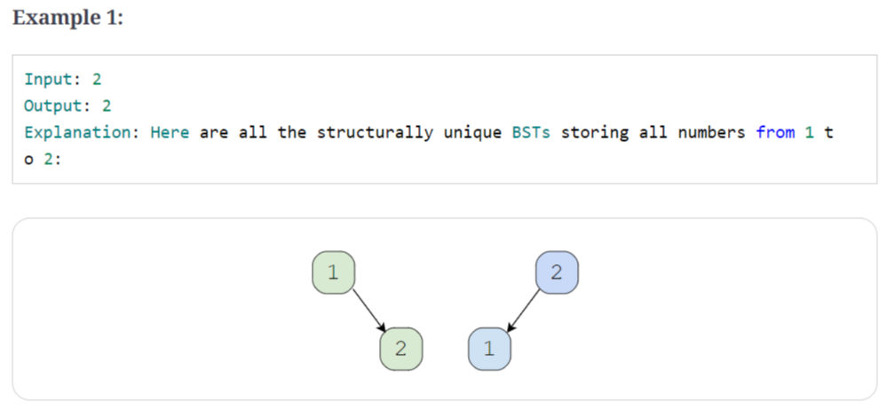

pattern-11 Subsets
1、introduction
解决排列和组合问题，使用广度优先算法
2、subsets
给定不含重复元素的集合，求其所有不同的子集
input: [1, 3]
output: [], [1], [3], [1, 3]
input: [1, 5, 3]
output: [], [1], [3], [5] ,[1, 3], [1, 5], [3 ,5],[1 ,3 ,5]
code:
vector<vector<int>> findSubsets(const vector<int>&nums){
vector<vector<int>> subsets;
subsets.push_back(vector<int>());
//取已经有的子集，插入新的元素，生成新的子集
for(auto currentNumber: nums){
int n=subsets.size();
for(int i=0;i<n;i++){
vector<int> set(subsets[i]);
set.push_back(currentNumber);
subsets.push_back(set);
}
}
return subsets;
}
Time Complexity : O(2^N)
Space Complexity : O(2^N)
3、subsets with Duplicates
给定含重复元素的集合，求其所有不同的子集
input: [1, 3, 3]
output: [], [1], [3], [1, 3], [3, 3], [1, 3, 3]
input: [1, 5, 3, 3]
output: [], [1], [3], [5], [1, 5] ,[1, 3], [1, 5, 3], [3, 3], [1, 3, 3],[5 ,3], [3,3,5],[1, 5, 3, 3]
code:
vector<vector<int>> findSubsets(vector<int> &nums) {
sort(nums.begin(), nums.end());
vector<vector<int>> subsets;
subsets.push_back(vector<int>());
int startIndex = 0;
int endIndex = 0;
//当遇到重复的元素时，取上一步生成的子集，插入新的元素，生成新的子集
for (int i = 0; i < nums.size(); i++) {
startIndex = 0;
if (i > 0 && nums[i] == nums[i - 1]) {
startIndex = endIndex + 1;
}
endIndex = subsets.size() - 1;
for (int j = startIndex; j <= endIndex; j++) {
vector<int> set(subsets[j]);
set.push_back(nums[i]);
subsets.push_back(set);
}
}
return subsets;
}

Time Complexity : O(2^N)
Space Complexity : O(2^N)
4、permutations
给定不含重复元素的集合，求其所有排列
input: [1, 3, 5]
output: [1, 3, 5], [1 ,5, 3], [3, 5, 1], [3, 1, 5], [5, 1, 3], [5, 3, 1]
code:
vector<vector<int>> findPermutations(vector<int> &nums) {
vector<vector<int>> result;
queue<vector<int>> permutations;
permutations.push(vector<int>());
for (auto currentNumber:nums) {
int n = permutations.size();
for (int i = 0; i < n; i++) {
vector<int> oldPermutation = permutations.front();
permutations.pop();
//添加currentNumber ，到所有的position
for (int j = 0; j <= oldPermutation.size(); j++) {
vector<int> newPermutations(oldPermutation);
newPermutations.insert(newPermutations.begin() + j, currentNumber);
if (newPermutations.size() == nums.size()) {
result.push_back(newPermutations);
} else {
permutations.push(newPermutations);
}
}
}
}
return result;
}

递归的方法：
void generatePermutationsRecursive(vector<int> &nums, int numsIndex,
vector<int> ¤tPermutation, vector<vector<int>> &result) {
if (numsIndex == nums.size()) {
result.push_back(currentPermutation);
} else {
for (int i = 0; i <= currentPermutation.size(); i++) {
vector<int> newPermutation(currentPermutation);
newPermutation.insert(newPermutation.begin() + i, nums[numsIndex]);
generatePermutationsRecursive(nums, numsIndex + 1, newPermutation, result);
}
}
}
vector<vector<int>> generatePermutation(vector<int> &nums) {
vector<vector<int>> result;
vector<int> currentPermutation;
generatePermutationsRecursive(nums, 0, currentPermutation, result);
return result;
}
Time Complexity : O(N * N !)
Space Complexity : O(N * N !)
5、string permutation by changing case
给定字符串，保留原序列，只改变字母的大小写，求所有排列
input: "ad52"
ouput: "ad52" ,"Ad52", "aD52", "AD52"
input: "ab7c"
ouput: "ab7c", "Ab7c","aB7c","ab7C","AB7c","Ab7C","aB7C","AB7C"
code:
vector<string> findLetterCaseStringPermutation(const string &str) {
vector<string> permutations;
if (str == "") {
return permutations;
}
permutations.push_back(str);
for (int i = 0; i < str.length(); i++) {
if (isalpha(str[i])) {
int n = permutations.size();
for (int j = 0; j < n; j++) {
vector<char> chs(permutations[j].begin(), permutations[j].end());
if (isupper(chs[i])) {
chs[i] = tolower(chs[i]);
} else {
chs[i] = toupper(chs[i]);
}
permutations.push_back(string(chs.begin(), chs.end()));
}
}
}
return permutations;
}

Time Complexity : O(N * 2^ N )
Space Complexity : O(N * 2^ N )
6、balanced parentheses
给定N，求n对（）的合理的组合
input: N=2
output: (()) ,()()
input: N=3
output: ((())) ,()()(), (())(), ()(()), ((),())
code:
struct Parenthesese {
string str;
int openCount;
int closeCount;
Parenthesese(const string &str, int openCount, int closeCount) : str(str), openCount(openCount),
closeCount(closeCount) {};
};
vector<string> generateValidParentheses(int num) {
vector<string> result;
queue<Parenthesese> queue;
queue.push({"", 0, 0});
while (!queue.empty()) {
Parenthesese ps = queue.front();
queue.pop();
if (ps.openCount == num && ps.closeCount == num) {
result.push_back(ps.str);
} else {
if (ps.openCount < num) {
queue.push({ps.str + "(", ps.openCount + 1, ps.closeCount});
}
if (ps.openCount > ps.closeCount) {
queue.push({ps.str + ")", ps.openCount, ps.closeCount + 1});
}
}
}
return result;
}
Time Complexity :
Space Complexity : O(N * 2^ N )
递归方法
void generateValidParenthesesRecursive(int num, int openCount, int closeCount, int stringIndex,
vector<char> &parenthesesString, vector<string> &result) {
if (openCount == num && closeCount == num) {
result.push_back(string(parenthesesString.begin(), parenthesesString.end()));
} else {
if (openCount < num) {
parenthesesString[stringIndex] = '(';
generateValidParenthesesRecursive(num, openCount+1, closeCount , stringIndex + 1, parenthesesString,
result);
}
if (openCount > closeCount) {
parenthesesString[stringIndex] = ')';
generateValidParenthesesRecursive(num, openCount, closeCount + 1, stringIndex + 1, parenthesesString,
result);
}
}
}
vector<string> generateValidParentheses2(int num) {
vector<string> result;
vector<char> parenthesesString(2 * num);
generateValidParenthesesRecursive(num, 0, 0, 0, parenthesesString, result);
return result;
}
7、unique generalized abbreviations
没看懂题目
8、evaluate expression
给定只包含0-9和+ - *的表达式，计算表达式加上括号后所有合理的运算结果
input: "1+2*3"
output: 7,9
explanations: 1+(2*3)=7, (1+2)*3=9
input: "2*3-4-5"
output: 8, -12, 7 ,-7 ,-3
explanations: 2*(3-(4-5)=8, 2*(3-4-5)=-12, 2*3-(4-5)=7, 2*(3-4)-5=-7, (2*3)-4-5=-3
code:
vector<int> diffWaysToEvaluateExpression(const string &input) {
vector<int> result;
//有两个字符串a、b, 判断a字符串是否包含b字符串，用到string库中的find函数与npos参数。
//string::npos参数：npos 是一个常数，用来表示不存在的位置
if (input.find('+', 0) == string::npos &&
input.find("-") == string::npos && input.find("*") == string::npos) {
}
if (input.find("+") == string::npos &&
input.find("-") == string::npos && input.find("*") == string::npos) {
result.push_back(stoi(input));
} else {
for (int i = 0; i < input.length(); i++) {
char chr = input[i];
if (!isdigit(chr)) {
vector<int> leftParts = diffWaysToEvaluateExpression(input.substr(0, i));
vector<int> rightParts = diffWaysToEvaluateExpression(input.substr(i + 1));
for (auto part1:leftParts) {
for (auto part2:rightParts) {
if (chr == '+') {
result.push_back(part1 + part2);
} else if (chr == '-') {
result.push_back(part1 - part2);
} else if (chr == '*') {
result.push_back(part1 * part2);
}
}
}
}
}
}
return result;
}
Time Complexity : 实际： 估计：O(N * 2^ N )
Space Complexity : 实际：估计：O*( 2^ N )
节省空间的方法：
有大量重复计算的值，用哈希表存储中间值
unordered_map<string, vector<int>> map = unordered_map<string, vector<int>>();
vector<int> diffWaysToEvaluateExpression2(const string &input) {
if (map.find(input) != map.end()) {
return map[input];
}
vector<int> result;
if (input.find("+") == string::npos &&
input.find("-") == string::npos && input.find("*") == string::npos) {
result.push_back(stoi(input));
} else {
for (int i = 0; i < input.length(); i++) {
char chr = input[i];
if (!isdigit(chr)) {
vector<int> leftParts = diffWaysToEvaluateExpression(input.substr(0, i));
vector<int> rightParts = diffWaysToEvaluateExpression(input.substr(i + 1));
for (auto part1:leftParts) {
for (auto part2:rightParts) {
if (chr == '+') {
result.push_back(part1 + part2);
} else if (chr == '-') {
result.push_back(part1 - part2);
} else if (chr == '*') {
result.push_back(part1 * part2);
}
}
}
}
}
}
map[input] = result;
return result;
}
9、structurally unique binary search trees
给定N，求节点值为1-n的二叉查找树


code:
vector<TreeNode *> findUniqueTreeRecursive(int start, int end) {
vector<TreeNode *> result;
if (start > end) {
result.push_back(NULL);
return result;
}
for (int i = start; i <= end; i++) {
vector<TreeNode *> leftSubsets = findUniqueTreeRecursive(start, i - 1);
vector<TreeNode *> rightSubsets = findUniqueTreeRecursive(i + 1, end);
for (auto leftTree:leftSubsets) {
for (auto rightTree :rightSubsets) {
TreeNode *root = new TreeNode(i);
root->left = leftTree;
root->right = rightTree;
result.push_back(root);
}
}
}
return result;
}
vector<TreeNode *> findUniqueTrees(int n) {
if (n <= 0) {
return vector<TreeNode *>();
} else {
return findUniqueTreeRecursive(1, n);
}
}
Time Complexity : 实际： 估计：O(N * 2^ N )
Space Complexity : 实际：估计：O*( 2^ N )
10、count of structurally unique binary search tree
给定N，求节点值为1-n的二叉查找树的个数

int countTrees(int n) {
if (n <= 1) return 1;
int count = 0;
for (int i = 1; i <= n; i++) {
int countOfLeftSubtrees = countTrees(i - 1);
int countOfRightSubtrees = countTrees(n - i);
count += countOfLeftSubtrees * countOfRightSubtrees;
}
return count;
}
Time Complexity : 实际： 估计：O(N * 2^ N )
Space Complexity : 实际：估计：O*( 2^ N )
节省空间的方法：
code：
unordered_map<int, int> map = unordered_map<int, int>();
int countTrees2(int n) {
if (map.find(n) != map.end()) {
return map[n];
}
if (n <= 1) return 1;
int count = 0;
for (int i = 1; i <= n; i++) {
int countOfLeftSubtrees = countTrees(i - 1);
int countOfRightSubtrees = countTrees(n - i);
count += countOfLeftSubtrees * countOfRightSubtrees;
}
map[n] = n;
return count;
}
Time Complexity : O( N ^ 2)
Space Complexity : O(N)
{kind=link}